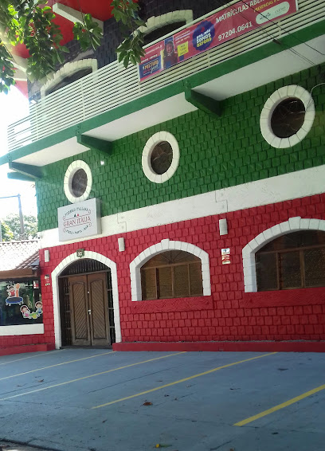

Gran Italia
Forneria casual de esfihas generosas e pizzas seletas com compartilhamento de sabores doces e salgados.
A Gran Italia é uma pizzaria que traz os verdadeiros sabores da Itália para sua mesa. Com massas finas, ingredientes
importados e um forno a lenha autêntico, as pizzas da Gran Italia são reconhecidas pela perfeição nos detalhes.
O cardápio variado oferece desde clássicas margheritas até criações exclusivas, sempre respeitando a tradição italiana.
O ambiente acolhedor, com decoração rústica, torna o lugar ideal para reunir amigos e família.
